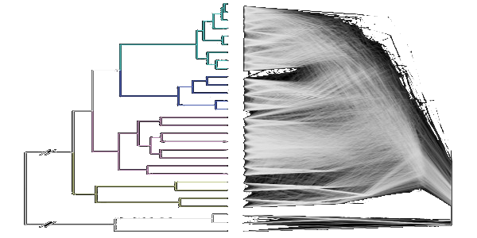
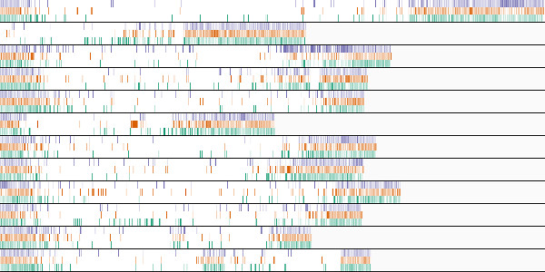
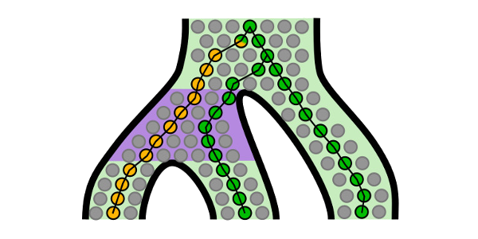

Research
Welcome! Our research focuses on using genome-scale data to investigate evolutionary processes of speciation, hybridization, and adaptation. Our goal is not only to explore and expand new genomic data, but also to create new analytic tools and approaches to enable novel research questions and perspectives. We pursue these questions of molecular evolution and genomics in a variety of organismal systems.

Complex Evolutionary Histories
We are investigating complex evolution histories of both recent and ancient species radiations, using both analysis of genomic data and phylogenetic reconciliation techniques. (
Read some example publications in
PLoS Biology and
Science.)

Genomic Analysis
We are developing new methods to investigate questions of hybridization, adaption, and functional gene expression using whole-genome and RNA-seq data. This includes not only evolutionary questions, but also functional genomic questions about specific traits including reproductive isolation and ecological adaptations. (Read example publications in
Molecular Ecology).

Computational Phylogenetics
We pursue questions of fundamental computational approaches and methodologies in phylogenetics and molecular evolution, particularly how to approach and interpret data in a multi-genomic world. (Read example publications in
The American Journal of Botany and
Systematic Biology).
Genomics Locally and Globally
We are involved in ongoing efforts to increase the diversity of plant genomes available, including North Carolina native plants to tropical trees at the Andean-Amazonian transition zone.